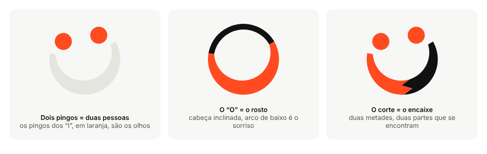
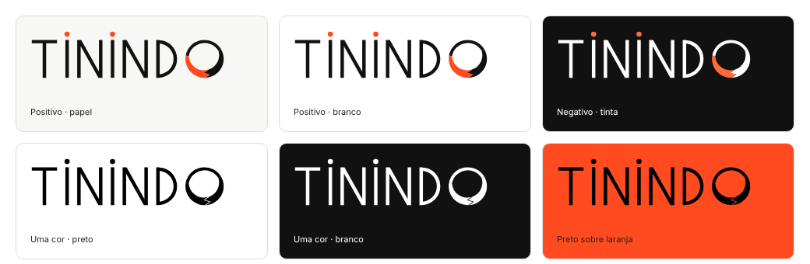
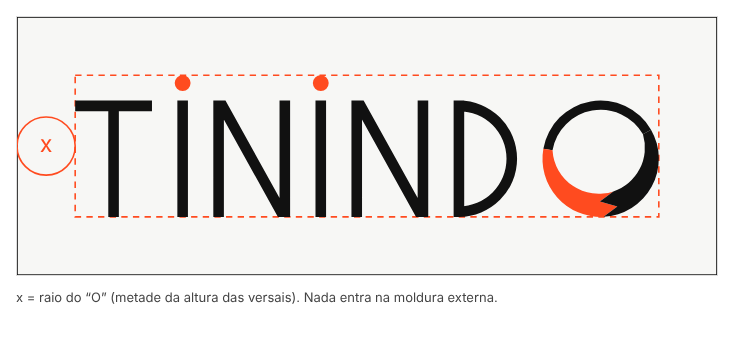
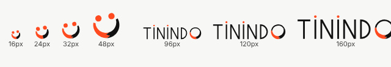
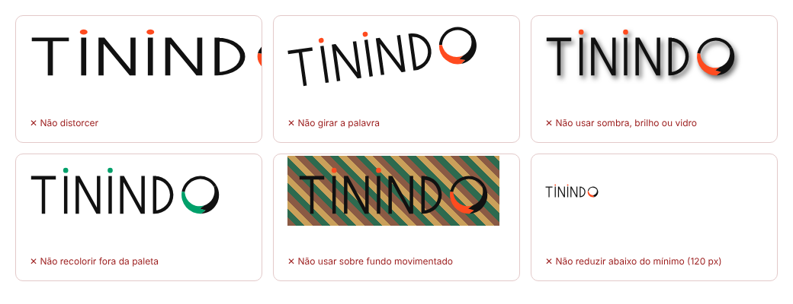
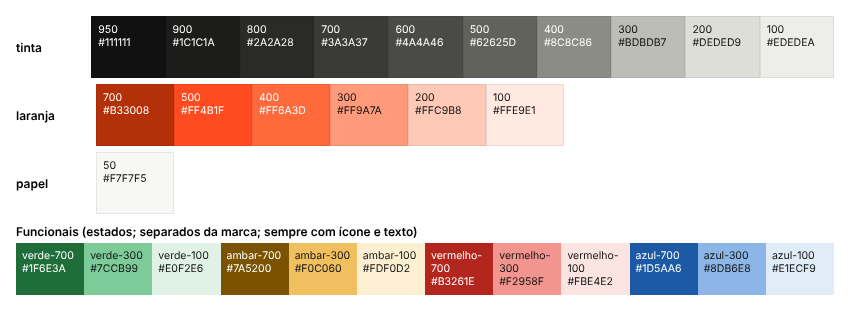
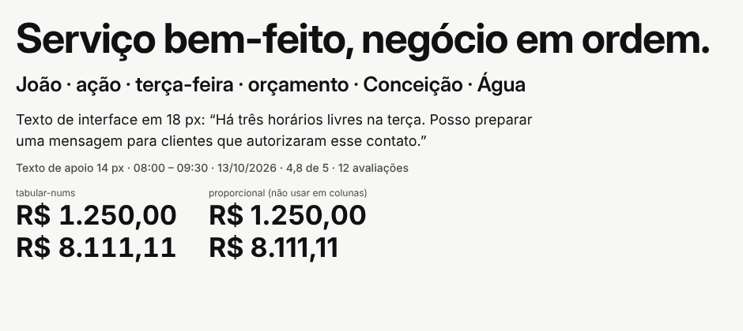

Versão 0.2 · 11 de outubro de 2026 · identidade “sorriso” (proposta do fundador, refinada nesta sessão)
Estado: proposta para aprovação do fundador e do sócio. Não é identidade registrada nem juridicamente liberada.
Rótulos: confirmado (decisão do fundador), hipótese, proposta, pendente de validação.
Permite que outra pessoa (ou ferramenta) aplique a marca sem depender da conversa que a originou. Regras para agentes de código: BRAND.md. Valores de cor, tipo e espaçamento: tokens/tokens.json e tokens/tokens.css (a fonte é o token, não este texto).
Existe: logotipos vetoriais, ícones, tokens, vitrine HTML navegável, peças de aplicação, apresentação para o sócio.
Não existe: pesquisa de mercado verificada, validação com profissionais, parecer jurídico, produto em operação.
Quem presta serviço sozinho acumula execução, atendimento, vendas, agenda, cobrança e compras; o trabalho em si costuma ser o que a pessoa quer fazer. Propósito proposto: dar a quem trabalha com as mãos e com a cabeça a capacidade administrativa de uma equipe pequena, e dar a quem contrata um jeito claro de escolher. O profissional faz o serviço; a Tinindo ajuda a fazer o negócio funcionar.
Promessa (proposta): menos tempo no administrativo, mais clareza sobre o negócio, perfis em que cada informação tem significado explícito.
Limites: não promete agenda cheia, aumento de renda, qualidade garantida, habilitação profissional nem verificação de antecedentes. Um selo bonito não prova nada disso.
| Atributo | Visual | Verbal |
|---|---|---|
| Competência acessível | Hierarquia clara; preto firme; poucos elementos por tela | Frases curtas, termos do ofício, sem jargão de tecnologia |
| Proximidade sem infantilização | Sorriso no símbolo, mas em linhas finas e preto adulto; sem mascote | Tratamento por “você”, sem gíria forçada nem diminutivos |
| Tecnologia sofisticada, uso simples | Material “vidro” só em camadas flutuantes; movimento contido | Explica o que o assistente fez e pede aprovação |
| Trabalho bem-feito e organização | Alinhamento rigoroso, escala de 4 px, letras finas e precisas | “Em ordem”, “bem-feito”, números com contexto |
| Orgulho profissional e autonomia | Retratos dignos; o profissional é o protagonista | O profissional decide; a Tinindo ajuda |
Uma frase: A Tinindo ajuda quem presta serviço a organizar o negócio e a ser encontrado, e ajuda quem contrata a escolher com clareza.
Até 80 palavras (68): A Tinindo reúne, em um só lugar, a gestão do trabalho de quem presta serviço e a descoberta de profissionais por quem contrata. Agenda, clientes e orçamentos ficam organizados; um assistente consulta os dados e prepara tarefas, e você aprova antes de qualquer envio. Para quem contrata, os perfis mostram o que cada profissional faz, onde atende e quando tem horário, com identidade, avaliações e formação sempre separadas.
Por que a 1: ecoa o sentido de “tinindo” (bem executado) para os dois lados; promete organização, não resultado financeiro; ritmo de duas metades. A 5 conversa mais com o símbolo (encontro), mas é mais abstrata. Riscos: “negócio” pode soar pesado para quem se vê como profissional, não empresa (testar). Pendente de validação com o público.
Preferir: profissional, serviço, atendimento, agenda, orçamento, cliente, bem-feito, combinar, aprovar, “você decide”, “nada é enviado sem a sua aprovação”.
Evitar: ecossistema, agentic, omnichannel, revolucione, turbine, garantido, “melhor profissional”, “mão de obra”, “bico”, “jeitinho”, “IA mágica”, “selo de qualidade” sem política, “Tinindo garante”.
Marca única Tinindo; descritores de função (“Para profissionais”, “Encontre um profissional”) em vez de submarcas. Sem Tinindo Pro, Academy ou Pay antes de o serviço existir.
Três ideias, todas já visíveis na palavra:

Escolhas de linguagem: letras finas e largas (precisão, “nobreza”), preto como cor-base (adulto, firme), laranja como destaque vivo (energia, “cor forte”). O sorriso dá proximidade sem usar mascote.
O “O” da palavra é exatamente o mesmo desenho do símbolo (mesma geometria, só escalado e sem os olhos, que na palavra são os pingos dos “I”). Nunca redesenhar nem endireitar o “O”.
As letras foram desenhadas como formas geométricas vetoriais, geradas por script (assets/logo/source/). O wordmark não é uma fonte: só existem T, I, N, D e O; não componha outras palavras com ele.
assets/logo/)| Uso | SVG | PNG |
|---|---|---|
| Wordmark positivo | tinindo-wordmark-color.svg | 1200 px, transparente |
| Wordmark negativo (fundo escuro) | tinindo-wordmark-negativo-cor.svg | idem |
| Wordmark uma cor | tinindo-wordmark-preto.svg, …-branco.svg (divisão do sorriso vira fresta) | idem |
| Símbolo principal (sem anel) | tinindo-symbol-{color,negativo-cor,preto,branco}.svg | 512 px |
| Símbolo com anel (uso grande) | tinindo-symbol-anel-{color,negativo-cor}.svg | 512 px |
| Símbolo pequeno, variante óptica (≤ 24 px) | tinindo-symbol-pequeno-optico-{color,negativo-cor,preto,branco}.svg | 256 px |
Os SVG são formas preenchidas e contornos fechados: sem máscara (clipPath), texto, raster ou script. As duas metades do sorriso são formas independentes com arcos exatos, prontas para gráfica, bordado, serigrafia e recorte de vinil. Pacote completo para uso (PNG em vários tamanhos, PDF vetorial, ícones de loja, redes sociais, papelaria, cores em .ase/.gpl): marca-pronta/.

Em preto ou branco puro não há duas cores para separar as metades; por isso o corte vira uma fresta fina. Em tamanhos pequenos a fresta é a primeira coisa que some: nesse caso usar a variante óptica (corte reto, olhos e sorriso maiores).
x = raio do “O” (metade da altura das versais), em todos os lados.


| Elemento | Mínimo | Base |
|---|---|---|
| Símbolo (variante óptica) | 16 px | Rosto e sorriso reconhecíveis; olhos pequenos |
| Símbolo (versão padrão) | 32 px | A partir de 24 px a variante óptica é opcional |
| Wordmark em tela | 120 px de largura | A 96 px o sorriso do “O” e o corte quase somem; a 120 px o “O” e o corte ainda se leem |
| Wordmark impresso | 32 mm de largura | Conversão de 120 px a 96 dpi (hipótese; não testado em gráfica) |
| Bordado, duas cores (símbolo / wordmark) | 30 mm / 60 mm | Hipótese, não testada em bordadeira; exige dois fios; pedir prova |
O traço fino das letras é o ponto mais sensível: não use o wordmark abaixo de 120 px; nesses casos use o símbolo.
assets/app-icons/app-icon-1024.svg|png (fundo preto, quadrado cheio; a plataforma aplica a máscara) e 512, 192, 180. O símbolo (sem anel, inclinado) ocupa 58% do lado. app-icon-rounded-preview.* é só pré-visualização.avatar-whatsapp-claro|escuro (640 px). O símbolo ocupa 50% do lado para sobrar margem no recorte circular.assets/icons/favicon.svg (variante óptica; o lado direito do sorriso troca de preto para branco conforme o tema do navegador) e PNG 16/32/48. favicon.ico não foi gerado.
Também não: aplicar vidro, desfoque ou gradiente ao logotipo; recriar o logotipo com texto digitado ou emoji; inverter as cores das metades do sorriso; trocar o laranja; usar o símbolo como emoji em texto corrido; usar “Tinindo” em fonte genérica no lugar do wordmark.
| Papel | Nome | HEX | RGB | CMYK aprox.* |
|---|---|---|---|---|
| Base da marca, texto, ações | Tinta 950 | #111111 | 17, 17, 17 | 0/0/0/93 |
| Destaque vivo (pingos, olhos, sorriso, linhas) | Laranja 500 | #FF4B1F | 255, 75, 31 | 0/71/88/0 |
| Destaque no escuro | Laranja 400 | #FF6A3D | 255, 106, 61 | 0/58/76/0 |
| Texto em destaque | Laranja 700 | #B33008 | 179, 48, 8 | 0/73/96/30 |
| Fundo claro | Papel 50 | #F7F7F5 | 247, 247, 245 | 0/0/1/3 |
| Fundo escuro | Tinta 950 / 900 | #111111 / #1C1C1A |
\* CMYK calculado por fórmula simples; é aproximação (depende do perfil de impressão e do papel). O laranja vivo é difícil de reproduzir em CMYK: pedir prova. Sem equivalência Pantone.

laranja-500 como texto sobre papel dá 3,12:1 (proibido). Texto em destaque usa laranja-700.Os 36 pares semânticos (claro e escuro) foram calculados por script a partir dos tokens; todos passam (4,5:1 texto, 3:1 componentes). Relatório: tokens/contrast-report.md.
| Par | Razão |
|---|---|
| Wordmark preto sobre papel | 17,6:1 |
| Preto sobre laranja-500 (fundo laranja com logo preto) | 5,65:1 |
| Laranja-400 sobre tinta (negativo) | 6,64:1 |
| Laranja-500 como ponto/olho sobre papel (não textual) | 3,12:1 |
| Laranja-500 como texto sobre papel | 3,12:1, proibido |
| Branco sobre laranja-500 | 3,34:1, só elementos grandes |
Isto verifica cores; não garante a conformidade da interface inteira (§8).
Wordmark: lettering próprio (§3). Interface e texto: Inter e Inter Display (OFL 1.1, verificada no pacote local fonts-inter 4.0; licença em LICENSES.md). Uma família variável, um arquivo.
| Token | Valor |
|---|---|
| Pesos | 400 texto · 500 rótulos · 600 botões e títulos médios · 700 só títulos grandes |
| Tamanhos | 12 · 14 · 16 · 18 · 20 · 24 · 32 · 44 · 56 px |
| Altura de linha | títulos 1,1 · interface 1,25 · texto 1,5 |
| Espaçamento de letras | títulos −0,02 em; rótulos em caixa-alta +0,06 em (ecoa as versais do wordmark) |
| Fallback | system-ui, "Segoe UI", Roboto, "Helvetica Neue", Arial, sans-serif |
| Números em agenda, preços e indicadores | font-variant-numeric: tabular-nums |

Verificado: “ação”, “João”, “terça-feira”, “Conceição”, “Água”, “R$ 1.250,00”. Nenhuma fonte proprietária da Apple é usada.
Ícones de interface (assets/icons/ui-icons-sprite.svg, 12 ícones): grade 24 px, traço 2 px, pontas arredondadas, currentColor. Evitar: robô, cérebro, circuito, ferramenta cruzada, faísca de “IA”, aperto de mão literal, pin de mapa como símbolo de marca. A estrela de avaliação sempre vem com número.
O sorriso é exclusivo do logotipo: não usar rostos sorridentes/emoji como decoração da interface; isso diluiria o símbolo.
Fotografia (proposta; nenhuma foto produzida): documental, luz natural, mãos e contexto reais de trabalho; profissionais com dignidade, competência e diversidade realista, executando o serviço de forma correta; foco no resultado; sempre com consentimento. Evitar sorrisos de banco de imagem (competem com o sorriso da marca), “antes e depois” exagerado e imagens geradas por IA apresentadas como pessoas reais.
Hierarquia clara, poucos elementos, ação principal evidente, leitura ao ar livre no celular. Tema claro é o padrão; escuro é suportado.
Somente em camadas flutuantes (barra de navegação, sheets, diálogo do agente). Nunca em tabelas, campos, formulários, texto corrido nem no logotipo. .tn-glass em tokens.css: alternativa opaca por padrão; desfoque só se suportado; opaco em prefers-reduced-transparency e prefers-contrast: more. Movimento zerado em prefers-reduced-motion.
applications/preview.html)Botões e links (normal, hover, foco, pressionado, desabilitado, carregando); campos com erro; cartão de profissional; agenda (confirmado, aguardando, cancelado, bloqueado, livre); indicador financeiro com período; blocos de reputação; avisos, vazio e erro; diálogo de aprovação do agente; navegação responsiva. Alvo de toque de 44 px (recomendação; o mínimo normativo do WCAG 2.2, critério 2.5.8, é 24×24 px).
| Estado | Rótulo | Regra |
|---|---|---|
| Informação consultada | “Informação consultada” | Diz de onde veio o dado |
| Recomendação | “Recomendação” | Não executa nada |
| Ação pendente de aprovação | “Ação pendente de aprovação” | Mostra destinatários, texto, benefício/desconto, custo estimado e horário |
| Ação executada | “Ação executada” | No protótipo: “(simulada)” e “nenhuma mensagem foi enviada” |
| Falha | “Falha” | Diz o que não aconteceu e oferece alternativa |
Nunca “Mensagem enviada” em simulação. Não imitar a interface oficial do WhatsApp.
Identidade verificada, avaliação de cliente, serviço realizado pela plataforma e formação/certificação são quatro coisas diferentes; nenhuma implica as outras. “Patrocinado” sempre explícito (“a posição não indica melhor avaliação”). Perfil sem avaliações: “Perfil novo · ainda sem avaliações”. Não existe selo “Tinindo garante”.
Referência: WCAG 2.2 AA. Critérios citados de memória; a fonte oficial (w3.org/TR/WCAG22) não pôde ser consultada (rede bloqueada). Confirmar antes de declarar conformidade.
tokens.css.Sem declaração de conformidade. Pendente: auditoria manual (teclado, leitor de tela, zoom 200%, formulários).
Português brasileiro claro, adulto, próximo e respeitoso. Sem gíria forçada, “jeitinho”, linguagem corporativa vazia ou promessa exagerada. O sorriso do logotipo não autoriza tom infantil.
| Situação | Usar | Evitar | Por quê |
|---|---|---|---|
| Apresentação ao profissional | “Organize o negócio. Continue no seu ofício.” | “Revolucione seu negócio com IA!” | Respeita o ofício; sem promessa inflada |
| Apresentação a quem contrata | “Veja o que cada profissional faz, onde atende e quando tem horário.” | “Os melhores profissionais, garantidos.” | Descreve; não garante o que não opera |
| Convite a organizar a agenda | “Quer colocar a semana em ordem? Comece pelos horários de terça.” | “Você está perdendo clientes por desorganização.” | Convite, não acusação |
| Solicitação de avaliação | “Como foi o serviço com Marcos? Sua opinião ajuda o próximo cliente.” | “Dê 5 estrelas!” | Pede opinião honesta, não nota |
| Lembrete de atendimento | “Amanhã, 08:00: instalação de chuveiro com Ana C.” | “Não esqueça!!!” | Informação objetiva |
| Proposta do agente | “Há três horários livres na terça. Posso preparar uma mensagem para clientes que autorizaram esse contato. Você revisa antes do envio.” | “Já mandei mensagem para todo mundo.” | Pede aprovação; respeita consentimento |
| Erro de integração | “Não foi possível conectar. Nada foi enviado. Você pode copiar o texto ou tentar de novo.” | “Ops! Algo deu errado.” | Diz o que aconteceu e o que fazer |
| Atendimento cancelado | “Ana C. cancelou o atendimento das 16:00. O horário voltou a ficar livre.” | “Você perdeu um cliente.” | Neutro; indica o próximo passo |
| Perfil sem avaliações | “Perfil novo · ainda sem avaliações. Veja os trabalhos e peça um orçamento.” | “Sem avaliações: contrate por sua conta e risco.” | Todo profissional começa sem avaliações |
Todas com dados fictícios e rotulados.
applications/preview.html: site (dois públicos), agenda, perfil público, agente, estados; responsivo; claro/escuro.applications/pieces.html: cartão de indicação (frente e verso), uniforme, cartaz de condomínio (declara que não é comunicado do condomínio), avatar.applications/exports/pecas.png e apresentacao/Tinindo-apresentacao-socio.pptx.Detalhes em research/creative-territories.md e research/evaluation.md.
| Etapa | O que aconteceu |
|---|---|
| Território A, “Tudo em ordem” | T de blocos de agenda; descartado (parece software genérico, some pequeno) |
| Território B, “Indicação” | Arco com ponto; boa nota na matriz (7,80) e primeiro kit completo (arquivado em research/territories/b-indicacao/kit-completo-anterior/) |
| Território C, “Capricho” | Versais finas e nobres; gostou da letra, não do símbolo (anel excêntrico) |
| Território D/E | Versais finas do C + pingos laranja do A e B; cor forte testada; preto como base |
| Símbolo | Cinco ideias (i, ii, T-teto, N, anel+ponto) → mistura de “ii” e “anel” → sorriso, ideia do fundador |
| Refino | Sorriso de 220°, mais grosso no meio; cabeça inclinada 10°; “O” da palavra igual ao símbolo; corte em dentes de serra em duas cores |
Avaliação do território escolhido (mesma matriz, julgamento de design): 6,85, contra 7,80 do B. A queda vem de distinção (5, motivo de rosto sorrindo é comum; pesquisa pendente) e de legibilidade/reprodução (6, traço fino e duas cores). Memorização (9) é a maior nota. A escolha é do fundador e do sócio; os riscos são tratáveis com variantes ópticas e regras de uso, e estão listados abaixo.
research/references.md).favicon.ico: pendentes.